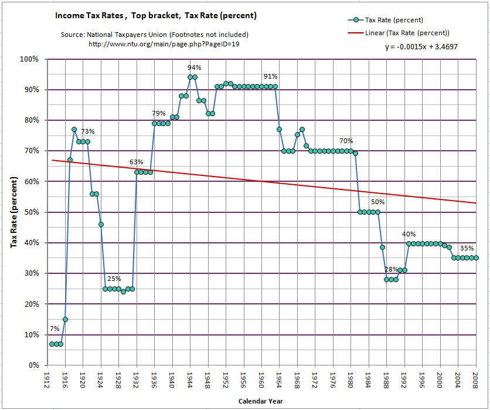
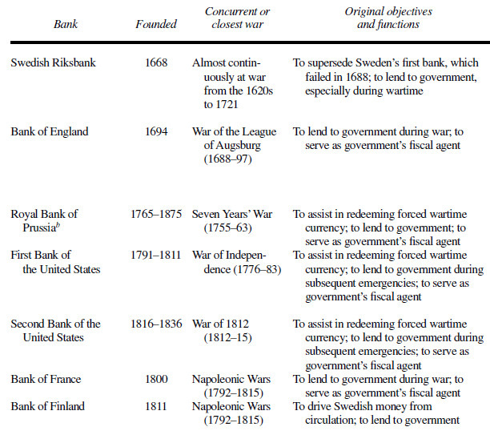
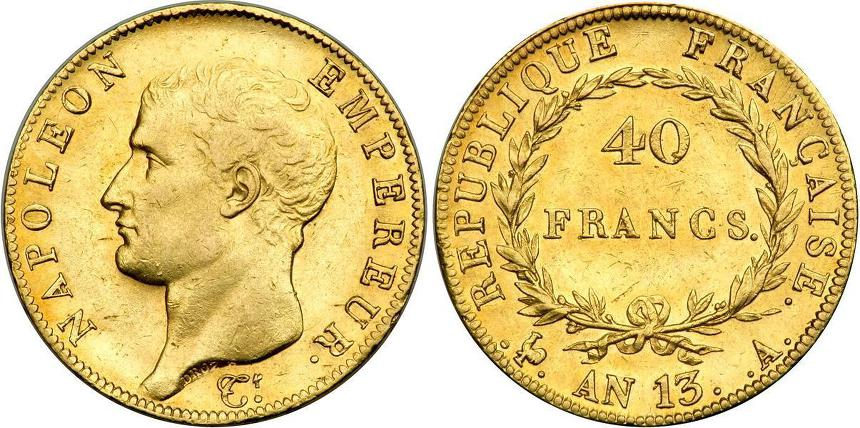
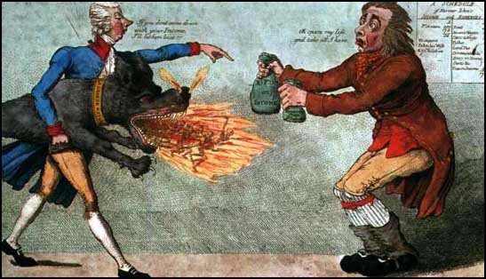
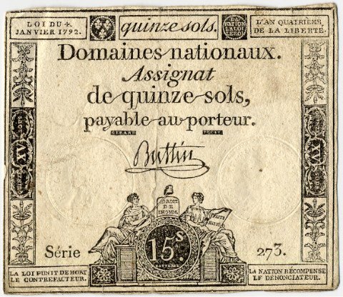
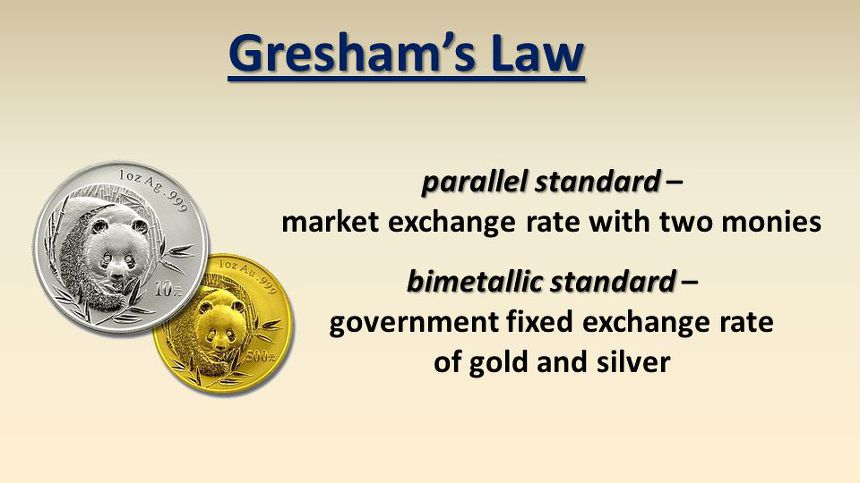

전쟁 비용 조달 - 영국과 프랑스의 차이
게시: 2019-01-14T01:01:03+09:00
모든 전쟁에는 돈이 아주 많이 들어갑니다. 흔히 미국이 30년대의 대공황에서 빠져나온 것이 루즈벨트의 뉴딜 정책 때문이라기 보다는 제2차 세계대전 덕분이라고 말하기도 합니다만, 저는 그렇게 생각하지 않습니다. 만약 그게 사실이라면 왜 불황이 생길 때마다 네바다 사막이든 태평양 한가운데든 가상 표적을 세우고 거기에 병력과 함대를 동원해서 맹폭격을 가하지 않겠습니까 ? 결국 그렇게 전쟁하느라 쓴 돈은 누군가 갚아야 하는 법이고, 미국도 전후 20년 정도 최고 세율 90% 정도의 엄청난 소득세를 부과하여 그 비용을 충당해야 했습니다.

(1913-2008 기간 중 미국 소득세 최고 세율의 역사입니다.)
나폴레옹 전쟁도 마찬가지였습니다. 영국이든 프랑스든 모두 누군가는, 정확하게는 결국 국민 전체가 전쟁 비용을 치루어야 했습니다. 그러나 영국과 프랑스 양국은 전쟁 비용을 마련하는데 있어서 매우 상반된 모습을 보여주었습니다. 한줄 요약하면 이렇습니다.
"전쟁 비용을 대기 위해 영국은 빚을 더 냈고, 프랑스는 세금을 더 걷었다"
그냥 이렇게만 놓고 보면 프랑스 측이 훨씬 더 건실한 재정 정책을 쓴 것처럼 보입니다. 그러나 실상은 꼭 그렇지는 않았습니다. 프랑스도 국채를 발행하여 전쟁 비용을 처리하고 싶었으나 신용불량의 전력 때문에 할 수가 없었을 뿐입니다.
상식적으로 세금만으로 전쟁을 치르기는 쉽지 않습니다. 전쟁에는 돈이 과다하게 많이 들어가는데, 그걸 모조리 세금으로 충당하려면 국민들에 대한 세금 부담이 너무 심해지기 때문입니다. 아무리 충성스러운 국민들이라고 해도 세금을 4~5배로 올려버리면 폭동을 일으킬 가능성이 높거든요. 자동차가 꼭 필요하긴 한데 당장 그럴 돈이 없을 때는 어떻게 하나요 ? 보통 카드 할부로 구입합니다. 말이 좋아서 할부지 사실은 카드사에게 비싼 이자를 내고 빚을 지는 것이지요. 전쟁도 마찬가지입니다. 당장 전선의 부대들과 바다 위의 함대들, 그리고 동맹국들이 돈을 달라고 아우성칠 때는 그렇게 빚을 내야 합니다.
대대로 유럽의 모든 정부들은 전쟁을 위해 빚을 냈습니다. 실제로 유럽에서 처음 설립된 중앙은행인 스웨덴 중앙은행 릭스방크(Riksbank)도 러시아와의 전쟁에 들어가는 군자금을 빌리기 위해 만들어진 은행이었고, 나폴레옹 전쟁 기간 전후에 세워진 여러 유럽 국가들의 중앙은행들도 모두 전쟁 자금을 충당하거나 그로 인해 생긴 빚을 처리하기 위해 만들어진 것들이었습니다. 미국 최초의 중앙은행인 First Bank of the United States도 독립전쟁으로 인한 빚을 처리하기 위해 한시적으로 만들어졌던 것이지요. 이렇게 중앙은행이라는 것의 기원은, 정부가 민간으로부터 전쟁 자금을 안정적으로 빌리기 위한 것이었습니다.

(유럽 각국 중앙은행의 설립과 연관된 전쟁들입니다.)
영국은 이미 100년도 전인 17세기 말에 영란은행(Bank of England)를 설립하여 전쟁 비용을 충당할 정도로 전쟁 금융에 매우 유능한 모습을 보여주었습니다. 그러나 영국의 국채 발행이 잘 되었던 것은 금융 관료들의 유능함보다는 기본적으로 영국 정부가 꼬박꼬박 채권 상환을 잘 하여 신용을 쌓아왔던데다, 결정적으로 왕실이 아닌 의회가 국채 발행과 상환을 책임졌기 때문이었습니다. 왕정이야 언제 무슨 정변이 나서 뒤집어질지 모르는 일이었지만 토지와 무역회사 등 주요 자산을 소유하고 있던 대주주들로 구성된 의회는 글자 그대로 주식회사 영국 그 자체였거든요. 따라서 의회가 책임지고 상환하겠다는 채권은 전쟁치고는 꽤 낮은 이자로도 잘 팔렸습니다. 덕분에 영국은 7년 전쟁의 경우 전체 전비의 51%를, 그리고 패전으로 끝난 미국 독립전쟁의 경우 81%를 국채 발행으로 메꿀 수 있었습니다. 덕분에 국민들의 세금 부담은 전시에도 급증하지는 않았습니다.
이렇게 영국 국채의 신용도가 괜찮았던 것은 영국 재무부에게 결정적인 여유를 주었습니다. 잠정적 금태환 정지를 선언하여 금본위제에서 벗어남으로써, 채권 뿐만 아니라 지폐도 추가로 찍어내어 자금조달이 가능했던 것입니다. 즉, 일정 수준의 인플레를 유발시킴으로써 기존 국채 가치를 떨어뜨렸던 것입니다. 이걸 인플레 세금(inflation tax)라고 합니다. 국민에게 직접 세금을 징수하는 것은 아니지만, 전반적인 통화 팽창을 통해 지폐 가치를 떨어뜨림으로써 결과적으로 국가 비용을 국민들이 부담하게 만드는 것이지요.
Lieutenant Hornblower by C.S. Forester (배경: 1803년 영국) --------------------
(아미앵 조약으로 영국과 프랑스 간에 짧은 평화가 있던 시기에, 무일푼이던 혼블로워 중위는 보직 해임 상태가 되어 먹고 살 길이 막막해집니다. 결국 혼블로워는 고급 장교들이 드나드는 클럽에서 4명이서 하는 카드 게임 때 부족한 머리 숫자를 채워주는, 일종의 타짜 노릇을 해서 먹고 삽니다.)
그는 혼블로워가 가슴 안주머니로 지폐를 쑤셔 넣는 것을 보았다.
패리 제독이 말했다. "예전 화폐를 다시 부활시킨다면 더 좋지 않겠소 ? 정부가 이런 지저분한 지폐를 없애고 예전의 멋진 기니 금화로 되돌아간다면 말이오."
"그거 정말 좋겠군요." 대령이 말했다.
램버트가 말했다. "그 놈의 육지 상어(순진한 뱃사람들을 속이는 사기꾼들)들은 해외에서 들어오는 배들은 모조리 상대한다오. 1기니당 23실링 6펜스를 주니, 틀림없이 실제로는 그보다 더 받을 수 있을거요." (원래 1기니는 21실링에 해당합니다: 역주)
패리는 주머니에서 뭔가를 꺼내에 탁자에 내려놓았다.
"보니(보나파르트 나폴레옹의 비칭:역주)는 옛날 프랑스 화폐를 부활시켰소. 보시오." 그는 말했다. "이 금화를 나폴레옹라고 부른다오. 그 친구가 이제 종신 제1통령이니 말이오. 이 금화 한닢에 20 프랑이라오. 예전에는 우린 이걸 루이 금화(louis d'or)라고 불렀지요."
"나폴레옹, 제1통령," 대령은 호기심을 가지고 금화를 보며 읽고는, 뒷면을 돌려 읽었다. "프랑스 공화국."
------------------------------

(진정한 남자라면 모양 빠지게 지폐 같은 것 가지고 다니지 않습니다. 나폴레옹의 얼굴이 새겨진 40 프랑짜리 금화 정도는 누구나 주머니에 넣고 다니는 것 아니겠습니까 ? 무게 12.91g, 순도 90%입니다. 그러나 이런 남자의 화폐를 주조하기 위해 얼마나 많은 사람들이 피와 눈물을 흘려야 했는지를 기억하셔야 합니다.)
빚으로는 소도 잡아먹는다고 하지만, 모든 빚은 결국 누군가가 갚아야 하는 법입니다. 카드 할부로 자동차를 산 경우에 몇 년에 걸쳐 월급 절약하여 계속 갚아나가야 하는 것과 똑같이, 국가도 세금을 좀 더 걷든가 나라 살림을 좀 줄이든가 해서 국채를 결국 갚아야 합니다. 영국 정부는 감채기금(sinking fund, 장기 채무 상환을 목적으로 별도로 적립해두는 기금)을 설립하여, 전쟁이 끝난 뒤에 세수 잉여분을 여기에 적립함으로써 국채를 꾸준히 상환했습니다.
영국도 마냥 빚만 낸 것은 아닙니다. 당연히 세금도 더 걷었습니다. 당시 영국 수상이던 소(小) 피트(William Pitt the Younger)는 전쟁 비용을 대기 위해 근대 역사상 처음으로 소득세(income tax)를 도입했습니다. 그 이전까지 세금이란 사람 머릿수에 따라 내는 인두세와 토지 등의 재산에 따라 내는 재산세, 그리고 관세와 부가세, 소비세 등의 형태였거든요. 사람이 일을 해서 번 소득 자체에 대해 세금을 낸다는 것은 근대 유럽 사회에 없던 개념이었습니다. 소 피트가 도입한 소득세는 누진세(progressive tax)라는 점에서 특히 주목할 만 합니다. 즉 소득이 더 많을 수록 더 높은 세율의 세금이 부과되는, 꽤 현대적인 개념을 도입했던 것입니다. 60파운드 이하의 소득에 대해서는 세금이 면제되었고, 60 파운드 이상의 소득에 대해서는 0.83%부터 시작하여, 200 파운드가 넘는 소득에 대해서는 최대 10%까지 세율이 올라갔습니다. 이는 나폴레옹이 국민들에게 부과했던 세금은 모두 단일 세율의 재산세와 소비세 등이었다는 것에 비하면 굉장히 진보적인 조세 정책이었습니다.

(피트 수상의 소득세에 대한 당시의 풍자 만화입니다. 동서고금을 막론하고 세금 좋아하는 국민은 없지요.)
한편, 프랑스에서는 상황이 상당히 달랐습니다. 의회가 권력을 가지고 있고 이미 산업 혁명을 시작했던 영국과는 국가 권력 구조와 산업 구조 뿐만 아니라 역사까지 달랐으니까요. 부르봉 왕정 시절, 아직 중앙은행도 없던 프랑스는 그냥 정부가 민간에게 직접 국채를 판매하는 형태로 7년 전쟁과 미국 독립전쟁을 치렀습니다. 국가 자산 중 상당 부분을 귀족과 교회가 쥐고 있었는데 정작 그들은 면세 혜택을 받았으니 그때 쌓였던 빚을 해결할 방법이 없었습니다. 어떻게든 세금을 늘려 이를 해결하기 위해 어설프게 삼부회를 소집했다가 터진 것이 바로 프랑스 대혁명이었습니다. 새로 들어선 국민공회는 몰수한 귀족과 교회의 토지 자산을 담보로 1789년 12월 5% 이자의 공채를 발행합니다. 이것이 유명한 아시냐(Assignat) 지폐가 됩니다. 즉, 처음에는 채권이었으나, 나중에는 0% 금리의 지폐로 쓰이게 된 것입니다. 보통 돈은 태환지폐라고 해서, 금과 바꿀 수 있는 증서같은 것이었는데, 금이 없으니 금 대신 토지와 바꿀 수 있는 증서를 발행한 것입니다.

(프랑스 대혁명의 대표적인 실패작 아시냐 지폐입니다.)
아시냐라는 저 프랑스어 스펠링을 보시면 아시겠습니다만, 저건 정부가 강제로 지정한(assigned) 돈으로서, 태생부터가 자연스러운 돈이 아니었습니다. 특히, 이미 파탄난 경제로 인해 돈이 궁해진 국민회의는 이듬해인 1790년부터는 애당초 몰수된 토지의 총가치를 훨씬 넘어서는 아시냐 지폐를 찍어내기 시작했습니다. 결과는 하이퍼 인플레였습니다. 특히 정부가 인플레를 잡는답시고 생필품 가격 상한제를 강제하자, 생필품이 시장에서 싹 사라지고 암시장에서만 거래되는 등, 역효과에 역효과만 불러일으켰고, 결국 수차례의 폭동으로 이어지게 되었습니다. 결국 아시냐 지폐는 가뜩이나 혁명으로 어수선한 프랑스 사회를 경제적으로 다시 한번 뒤흔들어놓고 7년만에 불명예스럽게 퇴장합니다. 퇴장할 때 정부는 이 지폐를 액면가의 3.33%에 해당하는 토지와 교환해줍니다. 투자 손실율 96.67%... 더군다나 투자한 것도 아니었는데 말이지요.
프랑스는 1720년대에도, 존 로 (John Law)라는 스코틀랜드인이 일으킨, 미국의 부동산에 투자하는 미시시피 사(社)라는 대규모 투자 거품 사건으로 인해서 지폐에 대한 불신이 팽배해있었습니다. 미시시피 거품 사건은, 한줄로 요약하면 존 로가 미국 땅을 담보로 프랑스에 지폐 발권력이 있는 금융회사를 차렸다가 거품으로 끝난 것입니다. 이때 프랑스인들은 지폐는 종이 쪼가리일 뿐 결코 돈이 아니라는 사실을 뼈저리게 느꼈었지요. 이 아시냐 지폐 사건은 프랑스에서의 지폐의 위치에 대해, '관 뚜껑에 못질을 한' 꼴이 되어 버렸습니다.
프랑스에서는 국채와 지폐에 대한 국민들의 신용이 이렇게 바닥을 친 상태인지라, 총재정부의 뒤를 이어 정권을 잡은 나폴레옹으로서는 부르봉 왕가나 국민공회처럼 채권이나 지폐를 찍어 재정난을 해결할 수가 없었습니다. 나폴레옹은 북아메리카 대륙의 프랑스 영토였던 루이지애나(이름 자체가 프랑스 왕 '루이의 땅'이지요)를 미국 정부에게 매각하여 돈을 마련하기도 하고, 정권으로부터 독립성을 가지는 프랑스 중앙은행(Banque de France)을 설립하는 등 시장의 통화와 정부 재정을 안정화시키는데 많은 노력을 기울였지만, 기본적으로는 금은 복본위제(bimetallic standard)에서 벗어나지 않았습니다. 이는 '내 통치 기간 중에는 절대 새로운 지폐를 추가로 발행하지 않겠다'라고 약속한 나폴레옹의 발언으로 대표됩니다. 실제로 1800년 나폴레옹의 통령 정부는 기존 정권에서 발행했던 채권에 대해 (이미 기존 채권의 가치를 크게 절하시킨 뒤이기는 했지만) 이자를, 그것도 금화나 은화로 지급하기 시작했습니다. 이와 함께 나폴레옹은 영국처럼 감채기금을 마련하여 장기 국채의 상환을 위한 안정성을 갖추었습니다. 이 모든 것은 영국처럼 프랑스도 국가 신용을 끌어올려, 전쟁 비용을 빚으로 충당하기 위한 노력이었습니다.

(Bimetallic standard를 보통 복본위제라고 합니다. 금본위제와는 달리 복본위제에서는 은도 지폐의 교환 대상이 되는데, 다만 금과 은의 교환비를 정부가 지정하게 되어 있습니다. 원래 유럽은 금의 많이 나는 대륙이 아니라서 고대 그리스 시대부터 전통적으로 은본위제를 사용했었지요.)
그러나 이 모든 노력에도 불구하고 나폴레옹은 국채를 대규모로 발행할 정도로 신용을 끌어올릴 수 없었습니다. 무너지기는 쉬워도 쌓기는 어려운 것이 바로 신용이거든요. 결국 나폴레옹은 전쟁 비용을 세금에 의존할 수 밖에 없었습니다. 그러나 나폴레옹은 결코 전제군주가 아니었고 국민들의 지지에 권력의 근거를 둔 황제였습니다. 전비 충당을 위해 세금을 지나치게 올렸다가는 자신의 권력 기반을 잃을 가능성이 매우 높았습니다. 그래서 세수 확대를 위해 길거리에서 채소와 생선을 파는 가판대에 대해서도 세금을 부과하자는 제안이 나오자, 나폴레옹은 다음과 같이 말했습니다.
"광장은 물처럼 무료로 사용할 수 있어야 한다. 이미 소금과 와인에 소비세를 부과하는 것만으로도 충분하지 않은가 ? 서민들의 가판대에 세금을 부과하는 것보다는, 곡물 시장을 중흥시키는 것을 고려하는 것이 더 파리에 어울리는 조치이다."
이런 상황에서 나폴레옹은 영국과는 달리 돈을 구할 다른 방법이 있었습니다. 그는 항상 '전쟁은 스스로 비용을 충당해야 한다'라고 말했는데 이는 바로 전쟁 배상금을 말하는 것이었습니다. 그는 1805년 아우스테를리츠 전투부터, 전쟁에서 승리할 때마다 패전국에게 무거운 전쟁 배상금을 뜯어냈습니다. 1807년 프로이센을 격파한 뒤에는 무려 1억2천만 프랑을 배상금으로 요구하여 프로이센을 나락으로 빠드렸고, 1809년 오스트리아를 패배시킨 뒤에는 그나마 좀 양보하여 8천5백만 프랑의 배상금을 뜯어냈습니다. 나폴레옹과 같은 군사 천재에게는 매우 수지맞는 방법이었을 것입니다. 그러나 그런 그에게 처음으로 좌절을 안겨준 것은 바로 스페인이었습니다. 분명히 전투에서 스페인군은 모두 무찌르고 거의 모든 영토를 정복했지만, 대체 이것들이 항복을 하지 않으니 배상금을 뜯어낼 방법이 없었던 것입니다. 스페인에서의 전쟁에 막대한 돈을 퍼부었는데도 그 비용을 충당할 방법이 없다보니 나폴레옹으로서는 무척 당황할 수 밖에 없었습니다. 나폴레옹의 또다른 돈줄은 이탈리아와 폴란드, 네덜란드와 독일 소공국 등 위성국가들로부터의 세금이었습니다. 이들은 동네 양아치에게 보호비조로 돈을 바치는 것처럼 나폴레옹에게 세금을 바쳐야 했습니다.
이 모든 것은 결국 나폴레옹의 몰락의 원인이 되었습니다. 이런 과중한 배상금과 세금으로 인해 나폴레옹은 유럽 전체에게 미움을 받을 수 밖에 없었고, 결국 늘어난 전쟁 비용으로 프랑스 국민들까지 과중한 세금에 시달리게 되어 지지율이 떨어졌으니까요. 결국 1815년 워털루 전투 이후 최종적으로 맺은 파리 조약에서, 프랑스는 무려 7억 프랑의 배상금을 연합국에게 물어내야 했습니다. 그 중에서도 가장 아이러니컬한 부분은 그 배상금은 연리 5%의 프랑스 국채로 지불했다는 것이었지요. 나폴레옹이 연전연승할 때는 못하던 것을, 패배 후에는 해낸(?) 것입니다.
Source : British and French finance during the Napoleonic wars by Michael D. Bordo & Eugene N. White
https://www.businessinsider.com/history-of-tax-rates
https://en.wikipedia.org/wiki/Progressive_tax
https://fr.wikipedia.org/wiki/Aspects_%C3%A9conomiques_et_logistiques_des_guerres_napol%C3%A9oniennes
https://en.wikipedia.org/wiki/Treaty_of_Paris_(1815)